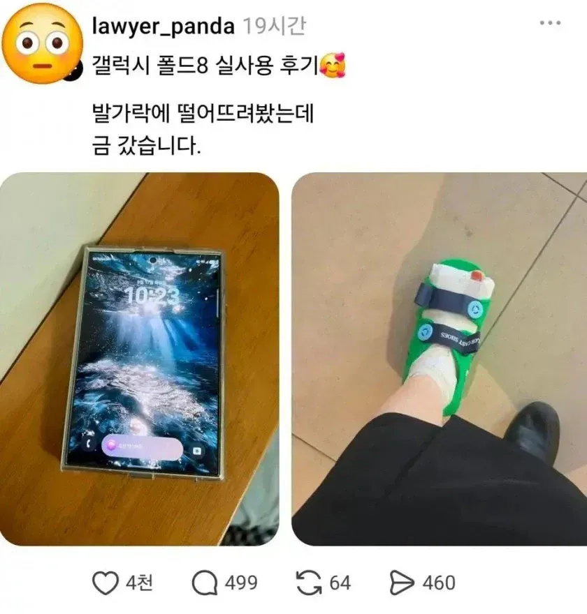

그래도 수리비가 싼 부품이 깨져서 다행임

그래도 수리비가 싼 부품이 깨져서 다행임
국민케어플러스 가성비ㄷㄷ
ㅋㅋㅋㅋㅋㅋㅋㅋㅋㅋㅋㅋㅋ
(강제가입)
국민케어플러스는 강제가입이라도 불만이 없지 ㅎㅎㅎㅎ
국케플 ㄷㄷ
근데 수리완료가 한달걸림;
당장사러간다
발가락은 스스로 붙잖아
폴드8은 스스로 안붙어
금간 건 침 바르면 낫지만 폴드는 안 낫는다고
난 아프기싫다 ㅜㅜㅎ 난 폰 망가지는게 나을듯
아무튼 보험으로 해결됐죠?
제조사에 AS 하셔야지 휴대전화에 문의하시면 안됩니다.
엄마: 알빠노
제조사에 하소연했더니 욕만 먹었습니다..
저거 개인보험에 골절진단금 까지 야무지게 챙길수있음 무조건 발깨지는게 맞음
망가진 게 자가재생되는 부품이라 다행이네
ㅋㅋㅋㅋㅋㅋㅋㅋㅋㅋㅋㅋㅋ 위 개붕이들 댓글봐라ㅋㅋㅋㅋㅋㅋ
굿락깔았음 금 안갔는데
발이 깨지면 보험금이 나와서 돈을 벌지만 폴드가 깨지면 돈이 나감ㅠ
냅두면 알아서 낫는다는거임
보험 되잖아
개안타 밥 마이 무믄 낫는다
폴드8 힌지쪽 모서리가 은근히 날카롭게 각져있어서 찍히면 존내 아프더라 ㅋㅋㅋㅋㅋ힌지보호 없이 뒷판만 케이스 끼워서 쓰는데 몇번 실생활에서 떨궈도 봤는데 말짱함. 삼페쓰다가 맨바닥에 떨궈도 봤고, 차에 타다가 문짝에서부터 아스파트까지도 떨궈봤고몇번은 아예 화면이 아래로 가도록 떨여졌는데도 크게 문제 없더라아주아주 약간의 찍힌 흔적은 있지만, 화면 기스라던가, 깨진다던가, 힌지가 개박살나서 나가리 났다던가는 전혀 없음.8세대까지 오면서 내구성 존나게 올린게 맞는거 같더라
물론 그래봤자 폰이니 케이스 없이 떨궜으면 어디하나 나갔겠지 ㅋㅋㅋㅋㅋ
애플에서 이 댓글을 싫어합니다
폴드8 수리비보다 발가락 수리비가 더저렴함 ㅋㅋ
형상기억통뼈
다행히도 뼈는 재생이 된다
부러진 뼈가 더 두껍다잖아 한잔해~
개불편
생체"부품"
잘못다치면 걍 폰망가지는게 낫긴함..
골절진단금 30만원 개꿀
금간불괴
건보되는 발가락 금가는게 맞다